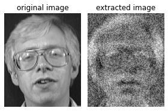
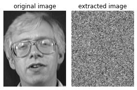

4. MI-FACE Model Inversion Attack vs Differentially Private SGD¶
In this tutorial, we introduce the basic model inversion algorithm MI-FACE and the popular privatization tool DPSGD, which makes the trained model differentially private. DPSGD injects noise into the gradients and prevents information leakage.
!git clone https://github.com/harveyslash/Facial-Similarity-with-Siamese-Networks-in-Pytorch.git
!mkdir data
!mv Facial-Similarity-with-Siamese-Networks-in-Pytorch/data/faces/testing/* data/
!mv Facial-Similarity-with-Siamese-Networks-in-Pytorch/data/faces/training/* data/
Cloning into 'Facial-Similarity-with-Siamese-Networks-in-Pytorch'...
remote: Enumerating objects: 550, done.
remote: Counting objects: 100% (18/18), done.
remote: Compressing objects: 100% (10/10), done.
remote: Total 550 (delta 6), reused 18 (delta 6), pack-reused 532
Receiving objects: 100% (550/550), 6.32 MiB | 21.66 MiB/s, done.
Resolving deltas: 100% (27/27), done.
import cv2
import numpy as np
import torch
import torch.nn as nn
import torch.nn.functional as F
import torch.optim as optim
import torchvision.transforms as transforms
from torch.utils.data import TensorDataset
from matplotlib import pyplot as plt
from sklearn.metrics import accuracy_score
from aijack.attack import MI_FACE
from aijack.defense import GeneralMomentAccountant, DPSGDManager
from aijack.utils import NumpyDataset
BASE = "data/"
class Net(nn.Module):
def __init__(self):
super(Net, self).__init__()
self.fla = nn.Flatten()
self.fc = nn.Linear(112 * 92, 40)
def forward(self, x):
x = self.fla(x)
x = self.fc(x)
x = F.softmax(x, dim=1)
return x
4.1. No defense¶
4.1.1. Setup¶
imgs = []
labels = []
for i in range(1, 41):
for j in range(1, 11):
img = cv2.imread(BASE + f"s{i}/{j}.pgm", 0)
imgs.append(img)
labels.append(i - 1)
X = np.stack(imgs)
y = np.array(labels)
# ToTensor：画像のグレースケール化（RGBの0~255を0~1の範囲に正規化）、Normalize：Z値化（RGBの平均と標準偏差を0.5で決め打ちして正規化）
transform = transforms.Compose(
[transforms.ToTensor(), transforms.Normalize((0.5,), (0.5,))]
)
trainset = NumpyDataset(X, y, transform=transform)
trainloader = torch.utils.data.DataLoader(
trainset, batch_size=4, shuffle=True, num_workers=2
)
net = Net()
criterion = nn.CrossEntropyLoss()
optimizer = optim.SGD(net.parameters(), lr=0.005, momentum=0.9)
4.1.2. Training the target model¶
for epoch in range(10): # loop over the dataset multiple times
running_loss = 0
data_size = 0
for i, data in enumerate(trainloader, 0):
# get the inputs; data is a list of [inputs, labels]
inputs, labels = data
# zero the parameter gradients
optimizer.zero_grad()
# forward + backward + optimize
outputs = net(inputs)
loss = criterion(outputs, labels.to(torch.int64))
loss.backward()
optimizer.step()
running_loss += loss.item()
data_size += inputs.shape[0]
print(f"epoch {epoch}: loss is {running_loss/data_size}")
in_preds = []
in_label = []
with torch.no_grad():
for data in trainloader:
inputs, labels = data
outputs = net(inputs)
in_preds.append(outputs)
in_label.append(labels)
in_preds = torch.cat(in_preds)
in_label = torch.cat(in_label)
print(
"Test Accuracy is: ",
accuracy_score(np.array(torch.argmax(in_preds, axis=1)), np.array(in_label)),
)
epoch 0: loss is 0.9156735908985137
epoch 1: loss is 0.8619398236274719
epoch 2: loss is 0.81106709420681
epoch 3: loss is 0.7768852257728577
epoch 4: loss is 0.7660594815015793
epoch 5: loss is 0.7590363520383835
epoch 6: loss is 0.7473625355958938
epoch 7: loss is 0.7374473077058792
epoch 8: loss is 0.7262152290344238
epoch 9: loss is 0.7187826019525528
Test Accuracy is: 0.87
input_shape = (1, 1, 112, 92)
target_label = 1
lam = 0.1
num_itr = 100
mi = MI_FACE(
net,
input_shape,
target_label=target_label,
num_itr=num_itr,
lam=lam,
log_interval=0,
)
x_result_1, log = mi.attack()
fig, axes = plt.subplots(nrows=1, ncols=2, figsize=(4, 3))
axes[0].imshow(cv2.imread(BASE + "s2/1.pgm", 0), cmap="gray")
axes[0].axis("off")
axes[0].set_title("original image")
axes[1].imshow(x_result_1[0][0].detach().numpy(), cmap="gray")
axes[1].axis("off")
axes[1].set_title("extracted image")
fig.tight_layout()
fig.show()

4.2. With DPSGD¶
lot_size = 40
batch_size = 1
iterations = 10
sigma = 0.5
l2_norm_clip = 1
delta = 1e-5
accountant = GeneralMomentAccountant(
noise_type="Gaussian",
search="ternary",
precision=0.001,
order_max=1,
order_min=72,
max_iterations=1000,
bound_type="rdp_upperbound_closedformula",
backend="python",
)
privacy_manager = DPSGDManager(
accountant,
optim.SGD,
l2_norm_clip=l2_norm_clip,
dataset=trainset,
lot_size=lot_size,
batch_size=batch_size,
iterations=iterations,
)
accountant.reset_step_info()
accountant.add_step_info(
{"sigma": sigma},
lot_size / len(trainset),
iterations * (len(trainset) / lot_size),
)
estimated_epsilon = accountant.get_epsilon(delta=delta)
print(f"estimated epsilon is {estimated_epsilon}")
accountant.reset_step_info()
dpoptimizer_cls, lot_loader, batch_loader = privacy_manager.privatize(
noise_multiplier=sigma
)
net = Net()
criterion = nn.CrossEntropyLoss()
optimizer = dpoptimizer_cls(net.parameters(), lr=0.05, momentum=0.9)
for epoch in range(iterations): # loop over the dataset multiple times
running_loss = 0
data_size = 0
preds = []
labels = []
for X_lot, y_lot in lot_loader(optimizer):
for X_batch, y_batch in batch_loader(TensorDataset(X_lot, y_lot)):
optimizer.zero_grad()
pred = net(X_batch)
loss = criterion(pred, y_batch.to(torch.int64))
loss.backward()
optimizer.step()
running_loss += loss.item()
data_size += X_batch.shape[0]
preds.append(pred)
labels.append(y_batch)
preds = torch.cat(preds)
labels = torch.cat(labels)
print(f"epoch {epoch}: loss is {running_loss/data_size}")
print(f"final epsilon is {accountant.get_epsilon(delta=delta)}")
estimated epsilon is 35.149970335258836
epoch 0: loss is 3.681807665568788
epoch 1: loss is 3.635799625376963
epoch 2: loss is 3.543356508305929
epoch 3: loss is 3.427740032739615
epoch 4: loss is 3.336359556889374
epoch 5: loss is 3.175302603028037
epoch 6: loss is 3.1255192260694384
epoch 7: loss is 3.0658171386446917
epoch 8: loss is 2.9871931764685993
epoch 9: loss is 2.949955497386951
final epsilon is 35.14997033525883
in_preds = []
in_label = []
with torch.no_grad():
for data in trainloader:
inputs, labels = data
outputs = net(inputs)
in_preds.append(outputs)
in_label.append(labels)
in_preds = torch.cat(in_preds)
in_label = torch.cat(in_label)
print(
"Test Accuracy is: ",
accuracy_score(np.array(torch.argmax(in_preds, axis=1)), np.array(in_label)),
)
Test Accuracy is: 0.895
mi = MI_FACE(
net,
input_shape,
target_label=target_label,
num_itr=num_itr,
lam=lam,
log_interval=0,
)
x_result_1, log = mi.attack()
fig, axes = plt.subplots(nrows=1, ncols=2, figsize=(4, 3))
axes[0].imshow(cv2.imread(BASE + "s2/1.pgm", 0), cmap="gray")
axes[0].axis("off")
axes[0].set_title("original image")
axes[1].imshow(x_result_1[0][0].detach().numpy(), cmap="gray")
axes[1].axis("off")
axes[1].set_title("extracted image")
fig.tight_layout()
fig.show()
